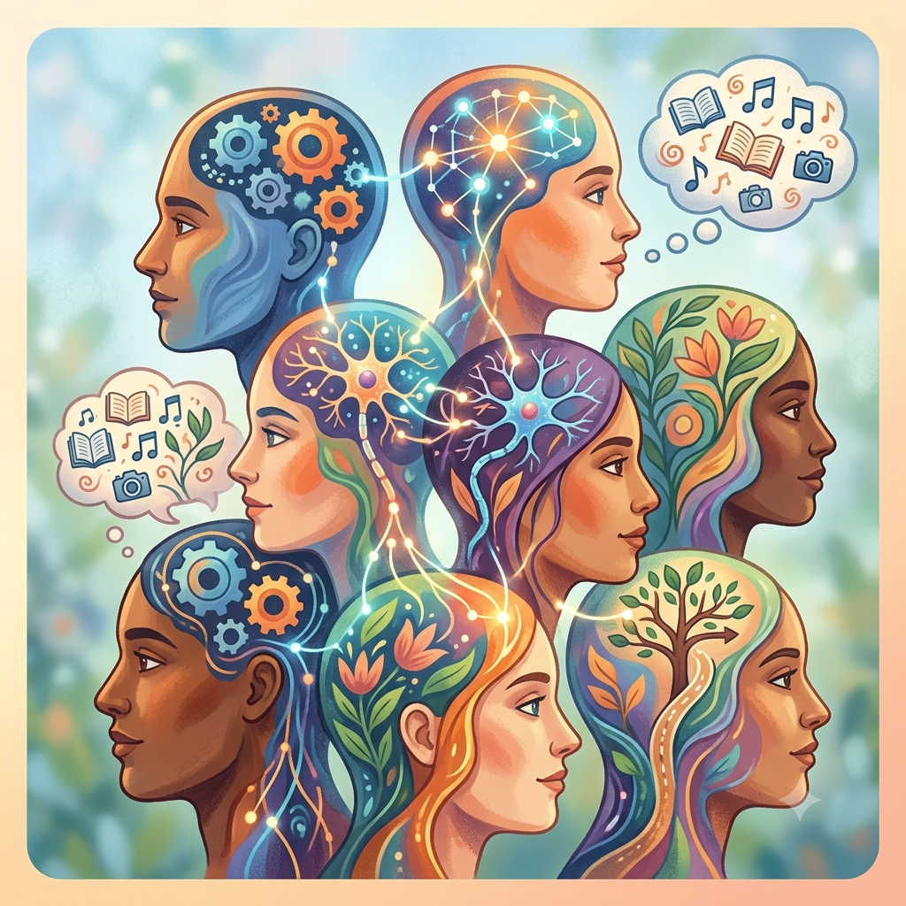

primeira vez que faço isso
Olá a todos que veem neste blog para aprender este tipo de conteúdo
Irei introduzir conhecimentos para combater preconceitos e tentar informar para quem não sabe o que é isso
Por: Maria Elisa

Olá a todos que veem neste blog para aprender este tipo de conteúdo
É um termo que diz que um célebro processa informações, se comporta, interage com todos ao seu redor de maneira diferente ou atipica em relação ao padrão esperado pela sociedade